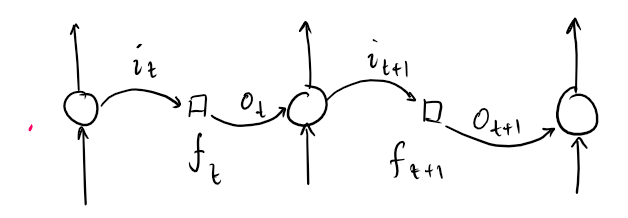

### AI
AI is a very broad category. It describes everything from tree search to deep learning.
Good old fashioned AI (**GOFAI**) describes anything which does not use neuron-based models to learn: that is, statistical machine learning models, constraint satisfaction, etc.
Neural computing then further encompasses deep learning.
### Learning paradigms
There are three learning paradigms:
* Supervised learning, where you have labelled data and model tries to find correct labels
* Unsupervised learning, where there are no labels
* Reinforcement learning, where model has states and actions, and feedback given based on that
Supervised learning tries to approximate a function $f:X \lra Y$. Example is classification.
Unsupervised learning tries to *find* a function given an $X$. Example is clustering.
Reinforcement learning is like [Little Albert and the Rat](https://www.simplypsychology.org/little-albert.html)
This is a form of **pavlovian conditioning** (associative learning) e.g. Albert being conditioned to fear the rat.
### Transfer Learning
Transfer learning is taking a pre-trained model, and retraining it to perform a similar task. I.e. taking an ImageNet classifier (knows 1000 types of objects) and training it further to recognise new categories of your own choosing.
This concept of "incremental learning" builds on previous work done, and is faster and less effort than going from zero.
Advantage:
* Allows training with less data since you reuse models
* Takes less time
* Takes advantage of existing good architecture (not reinvent the wheel)
The idea is to modify and retrain only the later stages/later layers. Naturally you have to set your own learning parameters still.
Biology Class
### Neurons
Your central nervous system (Brain, spine) has neurons. Neurons make think. Yes, this is relevant and examined.
Neurons generate signals (**action potentials**), which pass to other neurons.
Diagram of a neuron (ResearchGate)
**Dendrites** are tree-like structures with small spines which the synapses (ends) of other neurons connect to. They receive information.
The **Soma** is the cell body, and is where all the signals (charges) received go. They are put in the **axon hillock**, and if the signal exceeds a threshold, the neuron passes on the signal.
The **axon** is the long thing which connects the axon terminals (synapses) to the rest of the cell. The larger the diameter the axon has, the fast it transmits data. Axons have a fatty myalin sheath insulating it, and if this is degraded axon transmission effectiveness worsens.
Altogether, a neuron takes in input, has an **activation function** which transforms the signal, and then makes output.
There are three classes of neurons: **sensory, motor, relay/inter**.
Sensory neurons take input, motor neurons make output, and relay neurons relay data between them.
### Signal propagation
Signals are propagated electrically, called "membrane potential".
It comes from the voltage potential across the nerve fibre -- the cell membrane.
Inside the cell are lots of $K^+$ ions. Outside are a lot of $Na^+$ ions. Their inequality forms the voltage potential, which is at rest around -70 mV. This is the **resting potential**.
Across the cell membrane there are **channels** and **pumps**:
* The **leaky channels**, which allows the free travel of $Na^+$ and $K^+$ through (is not gated)
* The **volt-gated channels**, which only opens at certain voltages, and are generally closed at resting potential.
* The **Sodium-Potassium Pump**, which removes 3$Na^+$ and takes in 2$K^+$.
Neurons obey the "all or nothing" principle of firing; any stimulus under the threshold, no matter how big, does not fire, but anything that reaches it produces a full response.
See the graph for the phases.
Voltage graph during stages of activation (byui.edu)
A neuron is **polarised** if it is more negative on the inside. **hyperpolarisation** is when the membrane potential is below resting potential, whilst **depolarisation** is when it's above.
The threshold is around -55 mV.
A stimulus causes some Na+ volt-gated gates to open, but if it's not enough it'll go back again.
When the threshold is reached it causes a rush of volt-gated gates to open, giving a spike of voltage up to 30 +mV.
When it closes it hyperpolarises, and corrects itself.
### Synaptic transmission
Synapses transfer chemically, via **neurotransmitters**, which are released from vesicles, and travel to receptors on the opposing synapse/dendrite.
They can either be **excitatory** (causing action) or **inhibitory** (preventing action)
Note that axon terminals don't have to connect to dendrites. They can connect to dendrites, somas, and other axons. Dendrites can also connect to dendrites.
Artificial Neural Networks
### Introduction
Artificial Neural Networks are computer algorithms which are modelled off biological neuron learning.
Beginning in 1943 with the MP neuron, ANN technology has developed quickly, with Perceptron being invented in 1958, and backpropagation in 1986.
Naturally, theoretical developments came quicker than computing power at the time.
The limitations of a single layer Perceptron are apparent (see: the inability of even emulating an XOR gate), and lead to an **AI Winter** in the 1970s, where research in the field declined.
Neurons are arranged in layers, which connect through to one another. (Note the input layer is not counted)
Propagation of data goes in one direction, from input to output. This is called a **feed-forward NN**.
Of course there are many varieties,
like the convolutional neural net CNN, which works off filters (think: a function over an $n\times n$ block of an image);
or a recurrent neural network, with a feedback system that allows it to deal with time-series or sequential data (see image).
A RNN, and its expanded form through time.
The latter is not called feed-forward, rather feed-back.
ANNs use high performance hardware which are very fast and parallel (i.e. graphics cards). Because of the intense computing power needed for large NNs, it is very hard to scale up. They have limited fault tolerance capacity.
### MP-Neuron
An MP neuron is one of the simplest models. It has one neuron, which accepts binary inputs, and gives binary outputs, based on a user-set threshold $\theta$.
MP Neuron. It first sums the inputs, then will output if it is $\geq$ a set threshold.
We can extend the MP neuron with two types of inputs: excitatory and inhibitory. Excitatory inputs add to the value, and there must be enough excitatory neurons activated to meet the threshold before activation.
Inhibitory neurons however have **absolute veto power**.
We can also draw the MP neuron in **Rojas Diagram** form.
Rojas diagram.
Where the $\theta$ still refers to the threshold, and inhibitory neurons are indicated by a circle after the arrow (see $x_3$). One half of the neuron is black.
We can also write the MP neuron in **vector representation**:
Let $\vec{1} = (1, 1, \dots 1)$. Let inputs $\x = (x_1, x_2, \dots x_n)$.
The sum $z = \vec{1} \cdot \x$.
The **haviside function** $H_\theta(z) = \begin{cases} 1 & z \geq \theta \\ 0 & z < \theta \end{cases}$
Thus $y = H_\theta(\vec{1} \cdot \x)$
### To simulate logic gates
We have basic gates AND, OR, NOT; and derived gates NAND, NOR, XOR, IMPLY.
We can use an MP neuron to represent the basic gates, by writing out the truth table and finding threshold.
Basic logic gates as MP neurons
***Exercise.*** Consider the function $f: \{0,1\}^3 \lra \{0,1\}$, given as
\[
f(x_1, x_2, x_3) = \begin{cases} 0 & \rm{if } (x_1, x_2, x_3) = (0,0,0) \\
1 & \rm{otherwise.} \end{cases}
\]
Hint: This is a 3-input OR gate. The rest is left to the reader (because I cba rn).
Perceptron
### Introduction
The MP Neuron is limited:
* It only accepts binary ins and outs
* Every input is equally important / no weighting
* $\theta$ must always be set manually / no learning
A advancement of this is the Rosenblatt **perceptron:**
Rosenblatt perceptron. $\theta$ is learned.
We can move the $\theta$ from being a part of the perceptron node, and into a **bias**, so that we can use a standard Haviside "step" function:
\[
H = \begin{cases} 1 & z \geq 0 \\ 0 & z < 0 \end{cases}
\]
Thus getting
Bias is moved outside and set to $-\theta$. The step looking thing is the step function.
Which is representable as
\[y = H(\w \cdot \x + b)\]
We can even pretend the bias is another weight on a constant 1 input, i.e.
\begin{align}
\x &= (x_1, x_2, \dots, x_n, 1) \\
\w &= (w_1, w_2, \dots, w_n, b) \\
y &= H(\vec{w} \cdot \vec{x})
\end{align}
**Exercise.** A perceptron has two inputs, which have weights $[3,1]$, and a bias of $-3$. Draw the diagram of the perceptron, and predict the output on $\x = [0,1]$ and $\x = [1,1]$
### The Perceptron Learning Rule
(This may not be part of the exam)
In general:
LABEL start:
choose random \(\w, b : \w\t\x + b = 0\)
if $\exists$ misclassified node:
update $\w, b$
GOTO start
output $\w, b$
Recall: Given two vectors $\vec{a}, \vec{b}$:
\[
\vec{a} \cdot \vec{b} \begin{cases} = 0 & \rm{Orthogonal } (90^\circ) \\ > 0 & \rm{Acute} \\ < 0 & \rm{Obtuse or reflex} \end{cases}
\]
Given $\w \cdot \x$, and a vector $\vec{v}$, $\w \cdot \vec{v} \geq 0 \iff \rm{Angle}(\w, \vec{v}) \leq 90^\circ$.
We can use this property to detect misclassified nodes, if a $\vec{v}$ has an angle greater than 90.
For any vector $\vec{v}$ that is misclassified, we do $\w \lla \w + \alpha y \vec{v}$, where $\alpha$ is the learning rate, and $y$ is 1 or -1 based on which category they're supposed to be in. i.e. add misclassified + node, minus misclassified - node.
### Non-linear separability
A perceptron can only separate things linearly: it can only draw a straight line in a plane, or a straight plane in a 3D space.
XOR is a logic gate which is not linearly separable in 2D.
We can solve this by:
* Replacing the threshold with a more complex function (defeats the point of simplifying it in the first place)
* Increase the number of layers
Generally we prefer the second option.
Since we know that $x_1 \oplus x_2 = (x_1 \lor x_2) \land \lnot (x_1 \land x_2)$, we can split this into two layers:
The XOR gate
Since we have multiple layers, this is a **Multi-layer Perceptron** (MLP).
Since a perceptron draws a straight line in 2D space, any polygon can be decomposed into an MLP.
***Excersise.*** Given the picture on the right;
Represent the shape $R$ as a multi-layer perceptron.
The axes are $x_1$ and $x_2$ respectively.
***Answer.*** This can be decomposed into four lines, going anticlockwise from the top-right:
\begin{align}
(1) \; \; 0 &\leq -3x_1 -2x_2 + 6 \\
(2) \; \; 0 &\leq 3x_1 - x_2 + 3 \\
(3) \; \; 0 &\leq x_2 + 2 \\
(4) \; \; 0 &\leq -x_1 + x_2 + 2
\end{align}
They are intersected (ANDed) together.
Draw the MLP as appropriate.
Activations and Backpropagations
### Activation Functions
Fundamentally neural networks are function approximators. Activation functions are there to add non-linearity to our networks, to allow them to approximate non-linear functions.
\[
y = h(z)
\]
Where $y$ is the **activation value** and $z$ is the **pre-activation value**.
We have so far been using the step function for the perceptron. But here are a few more:
(Formulas are provided in the exam paper, but not derivatives, etc.)
**Linear Function.**
$$L(x) = c x \pod{c \in \bb{R}}$$
Literally ruins the point of why we have activations in the first place. It outputs more values than step but the output of any number of linear functions is still a linear function.
**Sigmoid Function.**
\[
\sigma(x) = \fr{1}{1+e^-x}
\]
Which handily satisfies (**remember**)
\[
\sigma'(x) = \sigma(x) (1 - \sigma(x))
\]
And is nonlinear.
Though, the max gradient is at $\sigma'(0) = \fr{1}{4}$, which implies that 75% of error gradient is lost during each backpropagation.
Naturally with enough layers, our gradient can vanish to near zero, and it'd be very hard to learn: **vanishing gradient function**
**tanh.**
$$\tanh(x) = \fr{e^x - e^{-x}}{e^x + e^{-x}} = 2\sigma(2x)-1$$
Is a rescaled version of sigmoid (**remember**). And has the derivative (**remember**)
\[
\tanh'(x) = 1 - \tanh^2(x)
\]
And can also be considered a smooth version of step, as it goes from -1 to 1 but smoothly. And it is centred around 0, which is helpful.
tanh also has vanishing gradient problems as a rescaled sigmoid and even more costly to compute.
**ReLU.** Rectified linear unit
\[
\rm{ReLU}(x) = \max(0, x)
\]
i.e. 0 if $x \leq 0$.
It is easy to compute, and has no vanishing gradient ... at least for positive values. For negative values, all gradient dies immediately.
It is not zero centred, and if a neuron goes below zero, it may just die -- **Dying ReLU**
**LeakyReLU.** Solves the dying relu problem by letting a little bit "leak" through the negative side. It is defined
\[
\textrm{LReLU}(x) = \begin{cases} x & x \geq 0 \\ \alpha x & x < 0 \end{cases} \pod{a \in \bb{R}}
\]
$\alpha$ becomes a hyperparameter.
**Parametric ReLU**. Leaky relu except the $\alpha$ is learned rather than preset. Compared to leaky relu, parametric relu can have a higher accuracy at little extra cost.
**SoftMax.** Usually used in output. It takes a vector and normalises it into weighted probability values.
\[
y_i = \fr{e^{z_i}}{\sum_{j=1}^N e^{z_j}}
\]
For a vector of inputs $\vec{z}$ and an output $\y$.
### Forward Propagation
Going from $\x \lra \z \lra y$. i.e. pushing data forward through a network.
This can be done element-wise, but is often better done matrix-wise.
Given the image on the right, given that the first layer uses **ReLU** and second uses **sigmoid** Let:
\begin{align}
\x &= \begin{bmatrix}
x_1 \\ x_2
\end{bmatrix} \\
\z &= \begin{bmatrix}
z_1 \\ z_2\\ z_3
\end{bmatrix} \\
\W &= \begin{bmatrix}
w_{11} & w_{21} \\
w_{12} & w_{22} \\
w_{13} & w_{23}
\end{bmatrix} \\
\vec{b}_1 &= \begin{bmatrix}
0 \\ 0 \\ b_1
\end{bmatrix}
\end{align}
Thus $\z = \W \x + \vec{b}_1$, and $\vec{a} = \rm{ReLU}(\z)$.
Let
\begin{align}
\vec{v} &= \begin{bmatrix}
v_1 \\ v_2 \\ v_3
\end{bmatrix} \\
b_2 &= b_2
\end{align}
Thus $\hat{y} = \sigma(\vec{v}\t \vec{a} + b_2)$.
For multiple layers we may see $\W^{[1]}, \W^{[2]}, \dots $ for the weights of different layers.
Multiple inputs $\x_1, \x_2, \dots$ can be feed-forwarded **together**, by making an $\X = [\x_1, \x_2, \dots, \x_n]$.
#### Loss Functions and Regularisation
The predicted $\hat{y}$ and the ground truth $y$ can be different. We want a metric to measure the badness of this difference -- a **loss function**.
We'd like it to
* Be minimised when $\hat{y} \lra y$
* Increases as $\lla \hat{y} \; \; \; \; \; y$
* Globally continuous and differentiable
* Convex (one global minimum)
... though it is usually very difficult to satisfy all of these, especially the last two and especially especially the last one.
Note: the term **lost function** and **cost function** are often interchangeable. However, loss function is technically per sample, whilst cost function is averaged over dataset, and can include regularisation.
Common losses for regression are $L_1$ (mean absolute error) and $L_2$ (mean squared error) loss, whilst for classification it often is entropy / log loss / hinge loss. (also see cs342)
The norms $L_1$ and $L_2$ satisfy a norm inequality:
$$ L_\infty \leq \cdots \leq L_2 \leq L_1 $$
and a norm equivalence: $L_p \equiv L_2 \iff$
\[
\exists c, C \in \bb{R} : c < C : cL_p \leq L_q \leq CL_p
\]
### Backpropagation
The derivative of a function $f$ is a vector of the partial derivatives of its variables.
**Notation.** For a function $f(x, \dots)$ let $f_x$ denote $\fr{\partial f}{\partial x}$.
The whole derivative of a function can be expressed using the multi-dimensional derivative "nabla" operator: $\nabla f$.
Because $\nabla f$ gives the direction of fastest increase, $-\nabla f$ is the direction of fastest descent.
Gradient Descent is an algorithm that finds the (a) minimum of a function using this method.
Iteratively, until $x_{t+1} \approx x_t$,
\[
x_{t+1} = x_t - \alpha \nabla f(x_t)
\]
Where $\alpha$ is the learning rate.
Backpropagation uses gradient descent to optimise weights and biases.
#### Necessary Calculus.
**This is very necessary.** This is a very easy way to work out the chain rule of partial derivatives, using **dependency graphs**.
A dependency graph is a graph between nodes, where there is an arc $x \lra y$ if $x$ affects $y$ (i.e. $y = f(x)$ where the $f$ may have some other variables.).
On these arcs can be written the partial derivatives $y_x$. Then to get a partial derivative from two ends of the graph, just **multiply every arc back** (and **add** multiple paths).
See these simple examples:
And this more complicated example:
Note that the dependency graphs for backpropagation are usually fairly linear. Though remember your standard loss function derivatives.
#### Backpropagation
In training, we
loop:
predict \( \hat{y} \) through forward pass
use loss function to measure error(\( \hat{y}, y \))
backpropagate error to update weights via gradient descent
Given a network with one input, and sigmoid function, with learning rate $\alpha$ (see right), using binary cross-entropy (log loss):
\[
\cal{L} = -\left( y \log \hat{y} + \left(1-y \right) \log\left(1-\hat{y} \right) \right)
\]
Write the learning rules for training. (For $w$ and $b$)
NOTE that \[ \cal{L}_y = \fr{\partial \cal{L}}{\partial \hat{y}} = \fr{\hat{y} - y}{(1-\hat{y})\hat{y}} \]
The proof is left as an exercise to the reader
**Caching.** (read the answer yet?) You may notice that there are many terms which are repeated, e.g. $\cal{L}_\hat{y} \cdot \hat{y}_z = \cal{L}_z$ were used for both $w$ and $b$.
Caching is the process of storing these terms and not computing them over and over.
Caching is essential to not having O(horrible) backpropagation.
***Example.*** Bigger example now, take the network on the right, compute $$\fr{\partial \cal{L}}{\partial w_3}$$ given that the inputs $(x_1, x_2, x_3) = (-1, 0, 1)$, the ground truth $y=1$, and the loss
$$\cal{L} = \fr{1}{2}(y-\hat{y})^2$$.
### Variations of Gradient Descent
**Momentum.** Gradient descent often gets stuck on very small local minima. Rather than it stopping, why not, like a ball rolling down the hill, give it some momentum to get over a small peak and reach a lower minimum?
Add a parameter $\beta$, which exponential-weighted-averages in iterations before the current one, where:
\[
x_{t+1} = x_t - av_t
\]
Where
\[
v_t = \beta v_{t-1} + (1-\beta) \nabla f (x_t)
\]
i.e. every update at time $t$ also takes into account the updates at previous times with exponentially less importance.
This equation unravels into
\[
S(\beta \nabla f(x_t) + \beta^2 \nabla f(x_{t-1}) + \beta^3 \nabla f(x_{t-2}) + \cdots)
\]
Where
\[
S = \fr{1}{\beta + \beta^2 + \beta^3 + \cdots}
\]
**RMSProp.** Root mean square propagation. This method helps prevent vanishing and exploding gradients.
Replace $\alpha$ with $\fr{\alpha}{\sqrt{w_t} + \varepsilon}$, where $w_t = \beta{w_{t-1}} + (1-\beta) (\nabla f(x_t) )^2$ for a (new and different) hyperparameter $\beta$.
This decreases the step for very large gradients and increases the step for small gradients.
**ADAM.** Putting both of these together, we have adaptive movement estimation, or ADAM.
We have momentum parameter $\beta_1$ and RMS parameter $\beta_2$.
**SGD.** Stochastic Gradient Descent. Rather than updating once for every piece of data in the dataset, update for every individual piece of data, or every minibatch of a portion of the dataset.
Hopfield Networks
### Introduction
**Fixed point iteration** is a method of solving an equation of form $x = f(x)$ by using a starting guess $x_0$ and repeatedly iterating until convergence ($x_k = f(x_{k-1})$).
We can think of $x_0$ as a "noisy" incomplete guess, and the process of iteration as refining that guess until we get convergence.
This is what a Hopfield Network does. It is usually used for image reconstruction, starting from a corrupted (partial) pattern $\x_0$, trying to reconstruct an optimal (memorised) pattern $\x^*$, by passing it through the hopfield network $F$ via $\x_{k+1} = F(\x_k)$.
Hopfield networks work off **Associative Learning**.
**Associative learning** encodes relationships between items cf. pavlovian conditioning. Hopfield is an **unsupervised** learning method using **associative memory** to link together partial and full images.
**Associative memory** (**content addressable memory**) is the ability to access an item by knowing only part of its content.
i.e. retrieve the most similar pre-memorised pattern based on similar points of the inputs.
Let an $n \times n$ image pattern be represented as a vector $\x\; n^2$ elements long.
Each element of $\x$ can either be: 1 or -1, in which case we have a *bipolar HN*; or 1 or 0. i.e. our image is binary.
We have one neuron per pixel.
### The Hopfield Network
HNs are a special type of recurrent networks (RNNs).
It is a **feedback** network, meaning it has feedback (cyclical) edges, unlike a feed-forward NN which doesn't have cycles.
It has a single, fully connected "auto-associative" layer (i.e. a complete graph), where every neuron is connected to every other neuron (but not itself).
Neurons have a binary threshold for I/O.
It is **energy-based**, with "energy" that decreases with each evolution (iteration). Seems to be like a learning rate.
Hopfield network of 4 nodes.
They are represented as a complete graph $G = (V,E)$, where
* Each node $i \in V$ is a **perceptual node** with set states $x_i \in \{1,-1\}$ or $\{1,0\}$.
* Each edge $(i,j) \in E$ has a weight $w_{ij}$
* Symmetrical, bidirectional edges
* No self loops
### Learning
HNs learn via the **Hebbian Learning Rule**:
> Neurons that fire together wire together
> Neurons that fire out of sync fail to link
If the states of $i, j$ are the same, then $w_{ij}$ makes positive (1). Else, makes negative (-1).
***Single Pattern.*** Given a bipolar network, and a single memorised pattern $\x$, the **weight matrix** $W$ for $\x$ is defined as
\[
\begin{matrix}
W_{ij} = x_i x_j \pod{i \neq j} & & W_{ii} = 0
\end{matrix}
\]
\[
\iff W = \x \cdot \x\t - \vec{I}
\]
We can do this because the network is bipolar. If the numbers are different, weights are -1, else, weights are 1.
***Multiple Patterns.*** Given N bipolar patterns $\x^{(1)} .. \x^{(n)}$, where each $\x^{(p)} = [x_1^{(p)} .. x_n^{(p)}]$;
We define the weight matrix
\begin{align}
W_{ij} &= \fr{1}{N} \sum_{p=1}^N x_i^{(p)} x_j^{(p)} \pod{ i \neq j} & W_{ii} = 0 \\
W &= \fr{1}{N} \sum_{p=1}^N \left( \x^{(p)} (\x^{(p)})\t \right) - \vec{I}
\end{align}
i.e the element-wise averages of all the individual image weight matrices.
***Binary States.*** To maintain the +1/-1 weight numbers, we can work out weights for binary 1/0 states using
\[
W_{ij} = (2x_i - 1)(2x_j - 1)
\]
Thus given N binary patterns, we do the same thing except we replace the middle with the above equation.
***Activation Function***.
When training, we want all neurons to have stable states. Our training function is given as
\[
\vec{s}({t+1}) = F(W \vec{s}(t))
\]
Where $\vec{s}(t)$ is the state of the neurons at time $t$; where $F(\cdot)$ is the activation function, and for bipolar HNs is given as
\[
F(x) = \rm{sgn}(x) = \begin{cases} 1 & x \geq 0 \\ -1 & x < 0 \end{cases}
\]
i.e. the new state of every neuron is the sign of the weighted sum of its neighbouring states.
***Stability.*** To make sure that our memorised pattern $\x$ is an **attractor** (i.e. a fixed point) we need to make sure
\[
\x = \rm{sgn} (W \x)
\]
For a single pattern, $W = \x \x\t - \vec{I}$, we can verify that it's stable, by checking it in our update function:
\begin{align}
\vec{s}_i(t+1) = \rm{sgn}\left(\sum_{j=1}^n W_{ij} s_j(t)\right) &= \rm{sgn}\left(\sum_{j=1}^n W_{ij} x_j\right) \\
&= \rm{sgn} \left(\sum_{j \neq i} (x_i x_j) x_j\right) \\
&= \rm{sgn} \left(\sum_{j \neq i} x_i \cdot 1\right) \\
&= \rm{sgn} \left(x_i \sum_{j \neq i}1\right) \\
&= \rm{sgn}\left(x_1(n-1)\right) \geq 0 \\
&= x_i\\
\therefore \x &= \rm{sgn}(W\x)
\tag*{$\Box$}
\end{align}
In essence, given a set of weights and an $\x$ sub it in and see if you get $x$ out.
Note that multiple patters **are not** unconditionally stable. In fact, (proof is very long)
TLDR We have a constant $\varepsilon_i$ which equals this thing: $\fr{n+1}{N} + \fr{x_i\bq}{N} \sum_{j \neq i} \sum_{p\neq q} x_i\bp \cdot x_j\bp \cdot x_j\bq$ which is important as:
The fixed point $\x\bq = \sgn(W\x\bq)$ exists only if $\varepsilon_i > 0$ for all neurons $i$.
***Energy.*** Energy is the capacity of the network to evolve. HN evolves until the energy reaches a local minimum.
The global energy $E$ is given as
\[
E = - \sum_{j > i}\sum_{i=1}^n s_i W_{ij} s_j
\]
I.e. the sum of all edges (counted **once**), multiplied to their neighbouring (bipolar) states, and made negative.
The matrix form is given
\[
E = -\fr{1}{2} \vec{s}\t W \vec{s}
\]
It is a given theorem that energy is a decreasing function.
Recurrent Neural Networks
### Introduction
A neural network that can deal with **sequential** data.
It has internal states (called memory).
RNN network, and its unravelled equivalent along time.
It has many uses, including sentiment analysis, speech recognition, and machine translation.
One common example is *named entity recognition*: go through a piece of text and pick out the proper nouns, putting them in predefined categories like Person, Place, Date... etc.
This may require extra context from before (and after) the word in the sentence.
In more detail, an unravelled RNN in more detail as follows:
There is a memory cell which acts as a hidden state that is carried through time. Information from the past is used for the present.
The RNN has three weights: $w_i, w_o, w_h$ for input weight, output weight, and hidden weight respectively.
Both hidden and output cells all have an activation function.
***Types.***
The **Elman** network has feedback from internal nodes.
The process is given
\begin{align}
a_0 &= \tanh(w_i x_0) \\
\hat{y}_0 &= \sigma(w_o a_0) \\
&\cdots \\
a_t &= \tanh(w_i x_t + w_h a_{t-1}) \\
\hat{y}_t &= \sigma(w_o a_t) \\
\end{align}
The **Jordan** network has feedback from the output post-activation.
The recurrent process is given
\begin{align}
a_t &= \tanh (w_i x_t + w_h y_{t-1}) \\
\hat{y}_t &= \sigma (w_o a_t)
\end{align}
Optionally, we can also add input and output biases $b_i, b_o$.
***Example.*** Given an Elman RNN (right), with weights and biases
\begin{align}
(w_i, w_h, w_o) &= (2, 4, 1) \\
(b_i, b_o) &= (-2, 2)
\end{align}
Predict the output given $\x = \{1, 2, 3\}$.
### Deep RNNs
A simple RNN only has *one, unidirectional* hidden layer, with no memory control.
Deep RNNs (DRNN) is deep with respect to both time and space.
Such as stacking hidden recurrent layers:
Or increasing time depth:
***Bidirectional RNN.*** combined from two unidirectional RNNs, a bidirectional RNN can use context from both the past and the future.
It is accurate, but has high complexity in training.
### LSTM
LSTM is long short term memory, and is aimed to solve the vanishing gradient problem.
Since a vanilla RNN expands a lot in time, it is supceptible to exponential decay (or blow up)
Since weights over time are multiplicative.
For exploding gradients we can do *gradient clipping* -- maxing out the gradient.
But for vanishing gradients, this is harder. This is what LSTM is for.
It introduces three **gates** for data passage:
* An **input gate** $i$; 1 allows data entry
* An **output gate** $o$; 1 allows data exit
* A **forget gate** (remember gate) $f$; 1 means **remember** values.

Example LSTM RNN
The gates depend on time $t$.
Technically, they are sigmoid probability values, but for simplicity we treat as binary.
Examples of what gate changes do what
* When $i=0$, the value from the memory cell at time previous to the current one gets carried over.
* When $o=0$, the item in the memory cell cannot affect the next input
* When $f=0$, the item in the previous memory cell is overwritten by the incoming output. This is like a vanilla RNN.
* When $f=1$, the item in the previous memory cell is combined with the current one, such as via addition.
Thus, a **vanilla RNN** calculates the hidden state $h_t$ by the following:
\[
h_t = \tanh (W \begin{bmatrix}
h_{t-1} \\ x_t
\end{bmatrix} )
\]
Where $W$ are the weights $\begin{bmatrix}
w_h & w_i
\end{bmatrix}$
Whereas an LSTM calculates the hidden state $h_t$ using the memory cell state $c_t$ and the current activated value $a_t$, via
\begin{align}
c_t &= f_t * c_{t-1} + i_t * a_t \\
a_t &= \tanh\left(W \begin{bmatrix}
h_{t-1} \\ x_t
\end{bmatrix}\right) \\
h_t &= o_t * \tanh c_t
\end{align}
And
\[
\begin{bmatrix}
f_t \\ i_t \\ o_t
\end{bmatrix} =
\sigma \left(
\begin{bmatrix}
\w_f \\ \w_i \\ \w_o
\end{bmatrix} \begin{bmatrix}
h_{t-1} \\ x_t
\end{bmatrix}
\right)
\]
Where $\w_f, \w_i, \w_o$ describe a pair of weights each, which are initialised randomly, and then learned (via a **sigmoid layer**) to refine the value of the three gates.
**Note:** $c_t \in (-\infty, \infty)$, but we want the $h_t$ value to be $\in (-1, 1)$. Thus, rather than just doing $h_t = o_t c_t$ directly we squeeze $c_t$ down using tanh. $a_t$ is naturally $\in (-1, 1)$ anyway.
**Note 2:** The star $*$ operator denotes "Hadarmard multiplication", multiplying element wise ... which I'm not sure why it's included since we've been referring to them as scalars.
***LSTM Internal Diagram.* (Important)**
LSTM Internals (left) compared to a vanilla RNN (right)
### Other RNNs
Different types of RNNs can be used for different mappings, such as 1:1, 1:Many, Many:1, and Many:Many
1:Many takes one input, and chains down many outputs. The reverse is for Many:1. Many:Many has multiple inputs to multiple outputs.
The networks we've drawn which unravel are many to many, **but** they only are many to many in that $|X| = |Y|$.
When $|X| \neq |Y|$, then we many need an encoder-decoder structure for our RNN.
An encoder decoder RNN used for language translation
而已矣。